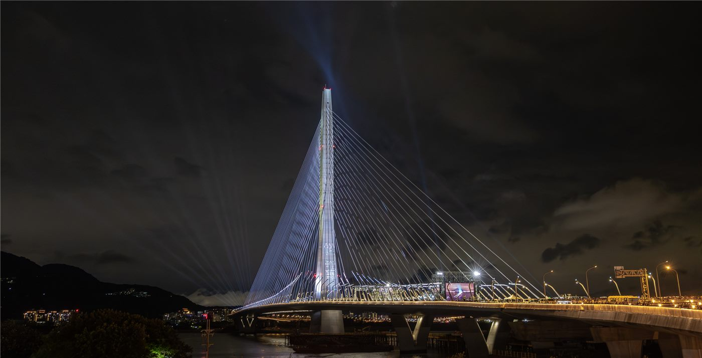

타이완 행정원, ‘이란(宜蘭) 고속철 연장’ 사업 승인
타이완 행정원이 고속철도를 북동부 이란(宜蘭) 지역까지 잇는 연장 사업을 승인했다. 서부에 집중된 고속철망을 동부로 확장하는 구상으로, 지역 균형과 교통 편의 개선이 기대된다.
손기요 기자 · 2026.07.24
橋대만

타이베이 타임스(자유시보 영문판)에 따르면, 행정원장이 이란 지역을 잇는 고속철 사업을 승인했다. 서부 회랑에 집중돼 온 고속철망을 동쪽으로 확장하는 계획이다.
광고 문의 · 300×250이란은 산악 지형으로 서부 주요 도시와의 이동에 시간이 걸리는 지역으로 꼽혀 왔다. 고속철이 연결되면 통근·관광 접근성이 크게 개선될 전망이다.
다만 산악 구간의 터널·교량 공사는 비용과 공기(工期), 환경 영향 평가 등 과제가 많다. 사업의 실제 착공과 완공까지는 상당한 시간이 걸릴 수 있다.
지역 사회에서는 개발 기대와 함께 환경·재정 부담을 둘러싼 논의도 예상된다. 대규모 인프라 사업은 편익과 비용을 함께 따져야 한다는 지적이 나온다.
구체적 노선·예산·일정은 후속 절차에서 확정될 전망이다. 본 기사는 보도된 사실을 정리한 것이다.
출처·참고 (사실 확인용 — 본문은 직접 재작성)
· 台北時報(自由時報)
· 台北時報(自由時報)